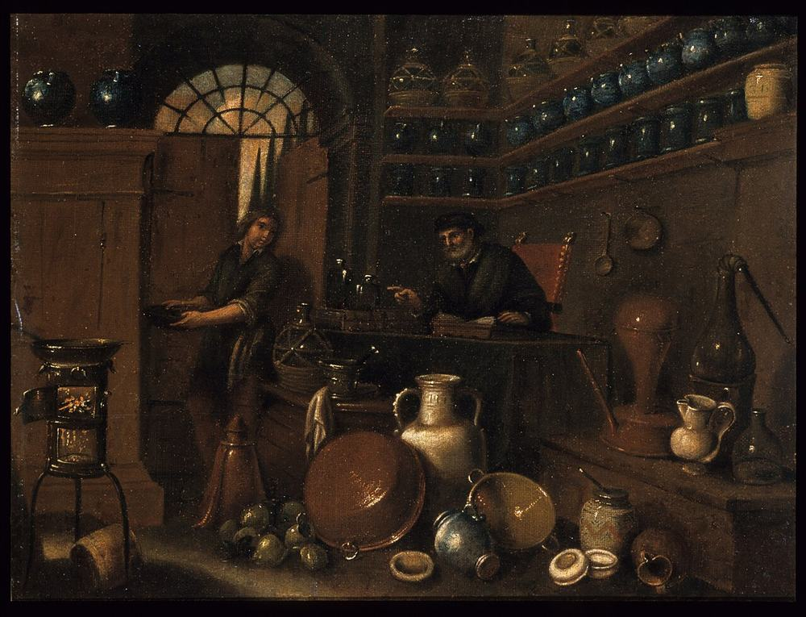
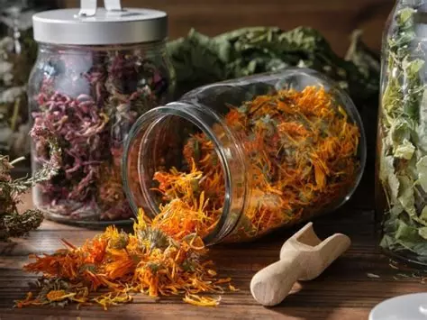
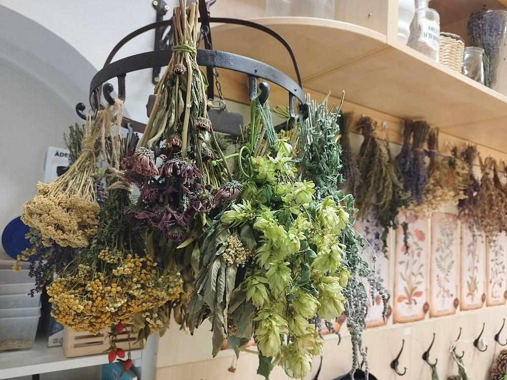
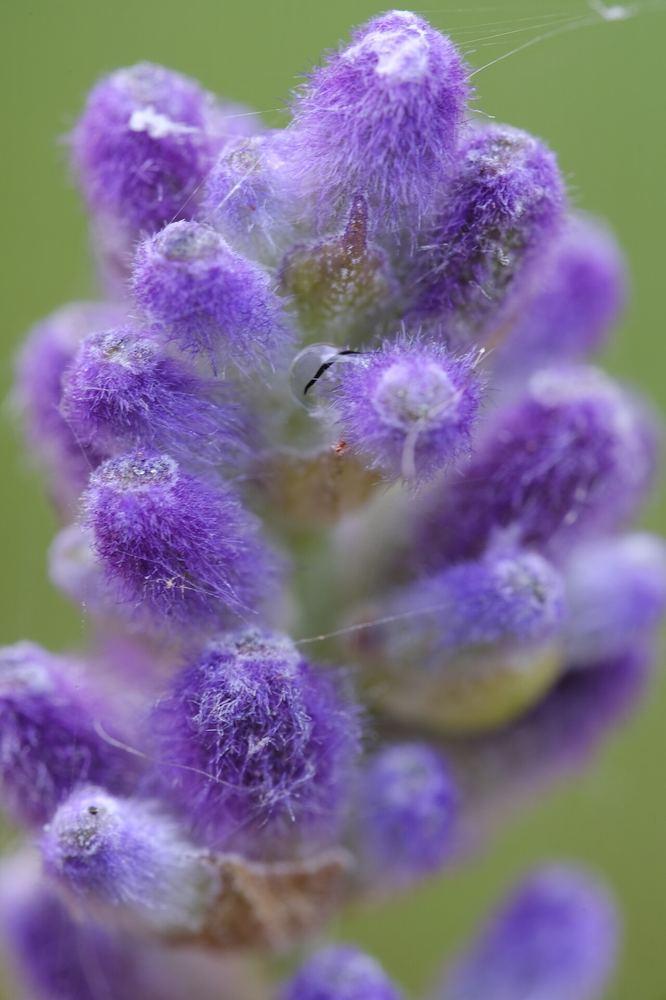
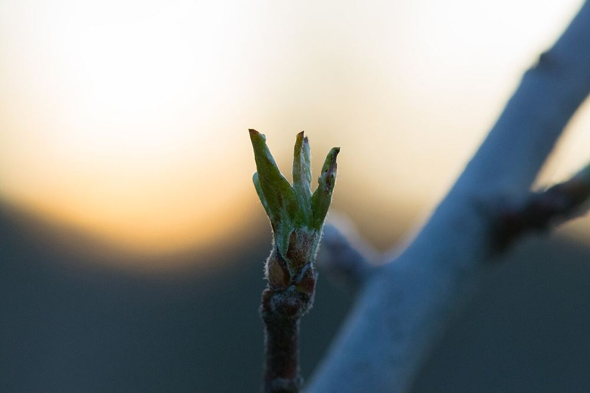
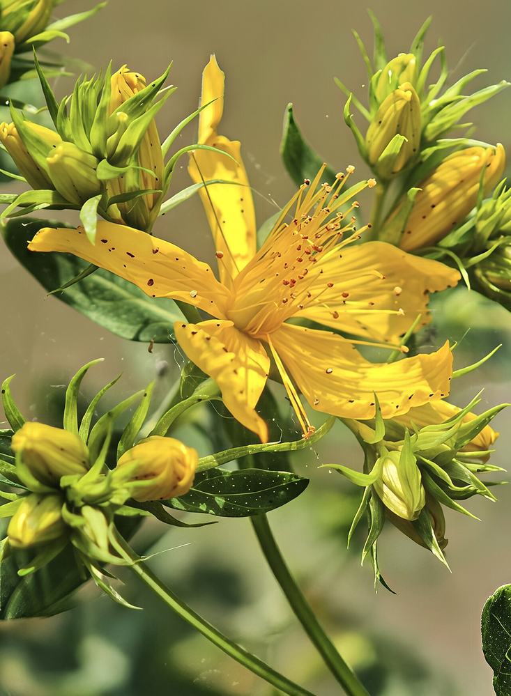
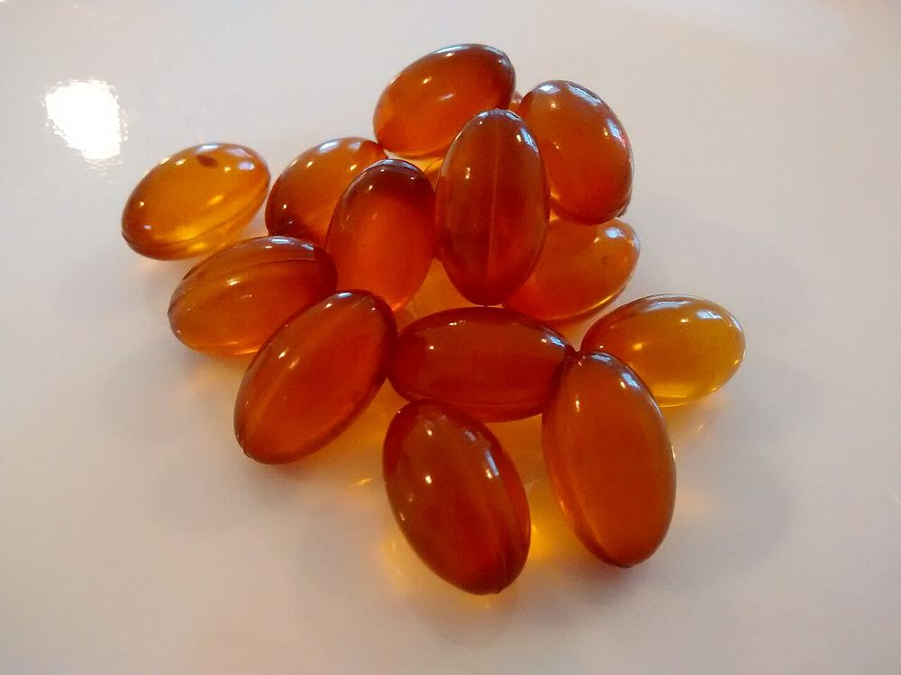
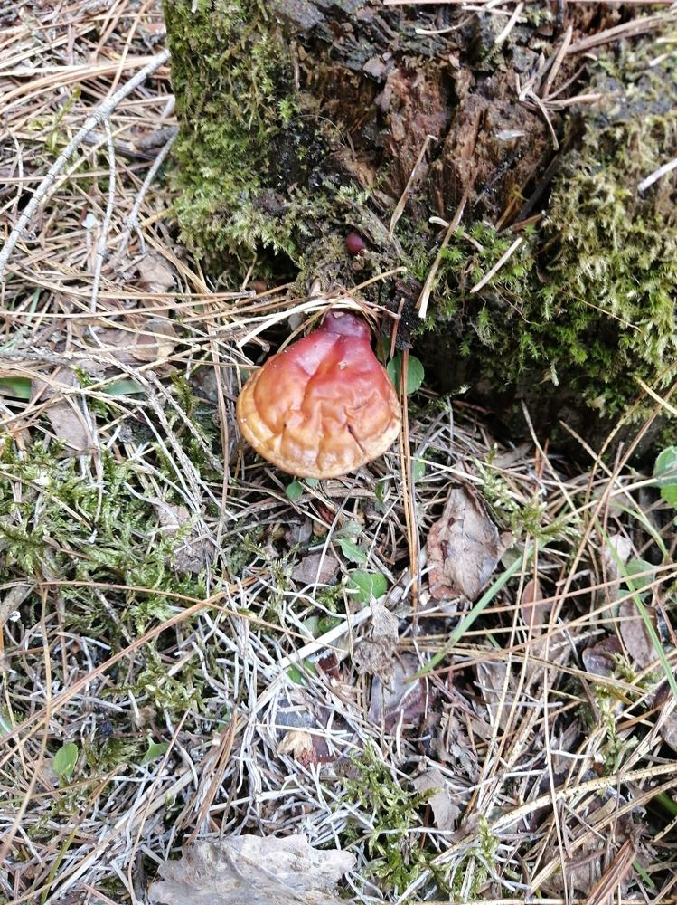

Notre Boutique
Une herboristerie traditionnelle au cœur de Dinan, où vous trouverez des plantes médicinales, des tisanes artisanales et des conseils personnalisés pour votre bien-être.
Une herboristerie traditionnelle au cœur de Dinan, où vous trouverez des plantes médicinales, des tisanes artisanales et des conseils personnalisés pour votre bien-être.
Installée dans le centre historique de Dinan, notre herboristerie vous accueille dans une ambiance chaleureuse et apaisante. L'espace est conçu pour vous faire découvrir le monde fascinant des plantes médicinales.
Vous y trouverez nos tisanes biologiques artisanales, des huiles essentielles pures, de la gemmothérapie, des alcoolatures, des hydrolats, des compléments alimentaires naturels et de la mycothérapie.
Chaque produit est choisi avec soin par Céline et Henrieta pour sa qualité, son efficacité et son origine. Nous privilégions les producteurs locaux bretons et les circuits courts pour vous offrir des produits frais et respectueux de l'environnement.




Mélanges artisanaux pour le bien-être
Nos tisanes viennent de paysans-herboristes bretons : Lilia, du Chemin de Traverse à Quévert, et Le Clos Fleuri à Saint-André-des-Eaux, qui cultivent, récoltent et sèchent leurs plantes aromatiques et médicinales biologiques à la main.

Huiles pures et biologiques
Laboratoire Salvia, fondé en 1988 en Vendée par l'aromathérapeute Luc Grossin. Entreprise familiale engagée dans une démarche 100% biologique, écologique et de circuits courts.

Extraits de bourgeons et jeunes pousses
Laboratoire Plantarée, breton, spécialisé dans la transformation de plantes fraîches biologiques depuis plus de 30 ans. Les jeunes bourgeons sont macérés dans un mélange eau-alcool-glycérine, certifié Ecocert.

Teintures de plantes fraîches
Laboratoire Plantarée, breton, spécialisé depuis plus de 30 ans dans les complexes hydroalcooliques de plantes fraîches biologiques, certifiés Ecocert.
Eaux florales de distillation
Laboratoire Salvia, fondé en 1988 en Vendée par l'aromathérapeute Luc Grossin. Entreprise familiale engagée dans une démarche 100% biologique, écologique et de circuits courts.

Soutien naturel au quotidien
Laboratoire Dynveo, laboratoire français de nutraceutique fondé en 2010, produisant ses compléments en France, certifiés bio, sans dérivés de synthèse ni métaux lourds.

Champignons médicinaux
Laboratoire Hifas da Terra, fondé en 1998 en Galice (Espagne), pionnier de la mycothérapie en Europe. Maîtrise toute la chaîne de production, de la recherche à la fabrication, à partir de champignons biologiques.
Toutes nos plantes, tisanes et produits sont à découvrir sur place.
Découvrez notre boutique et laissez-vous guider par notre expertise en phytothérapie.